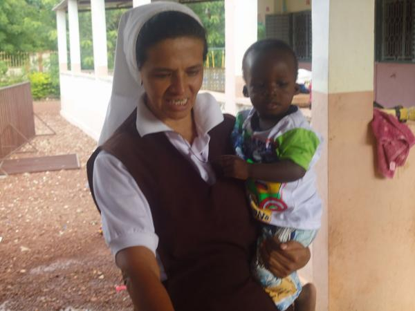

Familia de monja secuestrada en África dice que Gobierno la olvidó
La monja colombiana oriunda de Pasto, Nariño, fue secuestrada en febrero del 2017 pasado por un grupo yihadista en Malí (África).
Meses después de su secuestro, cerca de Burkina Faso, al grupo extremista Al-Qaeda le fue atribuido el hecho por las autoridades de ese país que poco o nada han hecho por su liberación.
“Completamos 35 meses sin saber de mi hermana”, dice y recuerda que la última prueba de supervivencia conocida fue el 13 de julio de 2018, mediante un video, en el que la religiosa aparece prestando unos servicios de enfermería. “Desde entonces no hemos sabido nada de ella”, insiste el profesor.
Durante estos tres prolongados y difíciles años para su familia se han tejido muchas versiones sobre su paradero, pero por informaciones que han conocido creen que se encuentra en el norte de Malí, muy cerca de Burkina Faso.
Se trata de una zona desértica. “Allá están en medio de la guerra, hay muertes y secuestros, por eso es que nadie sabe nada. Si está bien o no”.
informacion de la noticia

La hermana Gloria Cecilia Narváez Argoty.
Es tan complicada esa región que no hay sistemas de comunicación donde hay un dominio absoluto de los integrantes de Al-Qaeda.
“Es muy difícil ingresar allá. Es muy difícil tratar de comunicarse, porque es un desierto y el tiempo y el clima hacen que el acceso sea bastante complicado”, indica el profesor de una institución educativa localizada en el vecino municipio de Buesaco
Total indiferencia, del Gobierno, de la Cancillería, del Vaticano, inclusive, del Gaula de la Policía Nacional que nos estaba
ayudando
Preguntado sobre el curso que siguieron las diligencias adelantadas el año pasado ante la Cancillería y el Vaticano en procura de lograr la liberación de su hermana, su respuesta es contundente: “Total indiferencia, del Gobierno, de la Cancillería, del Vaticano, inclusive del Gaula de la Policía Nacional, que nos estaba ayudando”.
Al docente le sorprende por qué no ha valido tampoco el clamor de la Diócesis de Pasto ante la Iglesia para mediar en la liberación.
“Se olvidaron de mi hermana colombiana, nariñense, que está secuestrada en el África. Lo único que ella hace es evangelizar y ayudar a los pobres”, expresa Narváez, quien agradece a los medios de comunicación del país que han seguido pendientes de la situación de su hermana.
En medio de la incertidumbre y la tristeza que genera su plagio en una nación tan lejana, dice: “Gracias a Dios sabemos que está bien de salud, no se puede escatimar los esfuerzos de ninguna clase de gente ni política ni religiosa, pero la indiferencia es total”.
Y esa indiferencia la atribuye básicamente a la situación y las condiciones en las que la religiosa se encuentra.
Para el educador, el próximo paso que busca dar la familia es volver a gestionar el apoyo de la Cancillería en Colombia y del Vaticano, o en su defecto por intermedio del Gaula o la Interpol. Afirmó que lo que se quiere es una comunicación con el Ejército de Malí, que haya alguna prueba de supervivencia y, por supuesto, la libertad para ella.
El otro camino que cree que se debe explorar es el de la oración. “Es rogarles a todos los colombianos que sigan orando para que ojalá Dios quiera este año ella vuelva a casa”.
Para la familia, la oración puede ser la mejor arma y el mejor instrumento para lograr el propósito de que la madre Gloria Cecilia retorne al seno de su hogar en Nariño
Monja Gloria Cecilia Narváez aparece acompañada de otra mujer cautiva en Malí.
Exhorta a las autoridades y los medios de comunicación para que, a través de las redes sociales, se logre tener noticias de su hermana.
Confiesa que lo que más extraña de ella es su humildad, su personalidad y su alegría, “pero más que todo la sonrisa que ella tiene a flor de labio y su ayuda hacia los más pobres y desamparados”.
De hecho, admite que su característica esencial de ayudar a los demás sin pedir nada a cambio es lo que tiene a la monja colombiana en el lugar donde está. “Es por ser buena gente, amable y cariñosa que se fue hasta allá, pero mi Dios sabe cómo hace las cosas, ojalá algún día vuelva”, añade.
La hermana Gloria Cecilia Narváez tiene 60 años. En el último video de supervivencia, el docente la notó agotada por el clima, pero también la observó muy fuerte y madura.
La madre de la religiosa, Rosita Argoty, de 84 años, y sus tres hermanos la siguen esperando en su casa. "No perdemos la fe en Dios".
En cuanto al mensaje de Narváez a pocos días de cumplirse los tres años del secuestro de la religiosa, es categórico: “Que no se olviden, que hay una hermana religiosa nariñense y colombiana secuestrada en el África, es una persona que se fue a evangelizar, les pido que no la olviden, que se acuerden y que el Gobierno Nacional se preocupe por ella”
un jugador de futbol
Todos nos equivocamos. A veces son pequeñas erratas y otras veces son grandes errores que se ven desde lejos. No pasa nada, lo importante es que esos errores no lleguen al lector final.
Tanto si tienes un editor o corrector profesional que trabaje contigo como si no es así, tú mismo deberías leer todos tus textos. Por mucha prisa que tengas por cumplir el plazo de entrega no presentes nunca tus textos sin haberlos leído con detenimiento.
Una lectura detallada te ayudará a detectar errores ortográficos, gramaticales y también de estructura. A veces pequeños errores pueden provocar graves problemas, pero lo bueno es que esto se puede evitar dedicando 5 o 10 minutos a una lectura pausada.
contenedor 3
basquetbolista
Bryant, que ganó cinco campeonatos, participó en 18 Juegos de Estrellas y se convirtió en uno de los grandes de su generación durante una carrera de 20 años con los Lakers de Los Ángeles, murió el domingo en un accidente de helicóptero junto a su hija Gianna, de 13 años.
contendor 4
contendor 7
tenista
La cancha de tenis se esconde detrás de los pinos olorosos. Huelo los pinos desde mi escondite detrás de los troncos. Estoy enamorada del tenista. Es un muchacho con rodillas de piel traslúcida. La piel se le transparenta en las rodillas y entonces el hueso queda marcado como un puño apretado bajo un guante de látex. El triángulo de la rótula es delicado. Qué ósea la rodilla del muchacho. Cuánta belleza ósea.